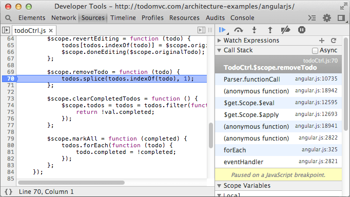

As the complexity of JavaScript applications increase, developers need
powerful debugging tools to help quickly discover the cause of an issue and fix
it efficiently. The Chrome DevTools include a number of useful tools to help
make debugging JavaScript less painful.
In this section, we will walk through how to use these tools by debugging the
Google Closure hovercard
demo
and other dynamic examples in this page.
Note: If you are a Web Developer and want to get the latest version of
DevTools, you should use Chrome Canary.
The Sources Panel
The Sources panel lets you debug your JavaScript code. It provides a
graphical interface to the V8 debugger. Follow the steps below to explore the
Sources panel:
The Sources panel lets you see all the scripts that are part of the
inspected page. Standard controls to pause, resume, and step through code are
provided below the panel selection icons. A button to force a pause at
exceptions is located at the bottom of the window. Sources are visible in
separate tabs and clicking opens the file navigator
which will display all open scripts.
Execution control
The execution control buttons are located at the top of the side panels and allow you to step through code. The buttons available are:
Continue: continues code execution until we encounter another breakpoint.
Step over: step through code line-by-line to get insights into how each line affects the variables being updated. Should your code call another function, the debugger won't jump into its code, instead stepping over so that the focus remains on the current function.
Step into: like Step over, however clicking Step into at the function call will cause the debugger to move its execution to the first line in the functions definition.
Step out: having stepped into a function, clicking this will cause the remainder of the function definition to be run and the debugger will move its execution to the parent function.
Toggle breakpoints: toggles breakpoints on/off while leaving their enabled states intact.
There are also several related keyboard shortcuts available in the Sources panel:
Continue: F8 or Command + \ on Mac or Ctrl + \ on other platforms.
Step over: F10 or Command+' on Mac or Ctrl+' on other platforms.
Step into: F11 or Command+; on Mac or Ctrl+; on other platforms.
Step out: Shift+F11 or Shift+Command+; on Mac or Shift+Ctrl+; on other platforms.
Next call frame: Ctrl+. on all platforms.
Previous call frame: Ctrl+, on all platforms.
For a walkthrough of other keyboard shortcuts supported, see Shortcuts.
Debugging with breakpoints
A breakpoint is an intentional stopping or pausing place in a script. Use breakpoints in DevTools to debug JavaScript code, DOM updates, and network calls.
Add and remove breakpoints
In the Sources panel, open a JavaScript file for debugging. In the example below, we are debugging the todoCtrl.js file from the AngularJS version of TodoMVC.
Click the line gutter to set a breakpoint for that line of code. A blue tag will indicate if a breakpoint has been set:
You can add multiple breakpoints. Click the line gutter of another line
to set another breakpoint. All the breakpoints you have set appear under Breakpoints in the right-hand
sidebar.
Breakpoints can be enabled or disabled using the checkboxes in this
sidebar. If a breakpoint is disabled, the blue tag will appear faded out.
Click on a breakpoint entry to jump to that particular line in the source file:
Remove a breakpoint by clicking the blue tag breakpoint indicator.
Right-click on the blue tag to access a menu with several options including: Continue to Here,
Remove Breakpoint, Edit Breakpoint, and Disable Breakpoint.
To set a conditional breakpoint, choose Edit Breakpoint. Alternatively, right-click on the gutter line and choose Add Conditional Breakpoint. In the input field, type any expression that could resolve to true or false. The breakpoint will pause code execution only if
the condition is true.
Conditional breakpoints are especially useful when you're looking to analyze code in a loop or an event callback that fires often.
Note: It may not be desirable to set breakpoints from the DevTools interface. Should you wish to launch the debugger from your code, you may use the debugger keyword to achieve this.
Interact with paused breakpoints
Once you have one or more breakpoints set, return to the browser window and interact with your page. In the example below, a breakpoint was added within removeTodo(). Now any attempts to delete a todo item in the TodoMVC app will trigger a breakpoint pause:
To resume code execution, click the Continue button or use the F8 keyboard shortcut in the DevTools window.
While a script is paused, you can interact with the Watch Expressions, Call Stack, and Scope
Variables panels in the right-hand side bar.
Call Stack panel
The Call Stack panel displays the complete execution path that led to the point where code was paused, giving us insights into the code flaws that caused the error.

To view the execution path including asynchronous JavaScript callbacks such as timer and XHR events, check the Async checkbox.
When you blackbox a JavaScript source file, you will not jump into that file when stepping through code you're debugging. You are able to debug just the code you are interested in.
You can use the Settings panel to blackbox scripts, or right-click in the sources panel on a file and choose Blackbox Script from the context menu.
The DevTools console drawer will allow you to experiment within the scope of where the debugger is currently paused. Hit the Esc key to bring the console into view. The Esc key also closes this drawer.
In the Sources panel select "dynamicScript.js" from scripts drop-down and
set breakpoint on line 2
You should stop on the breakpoint
Click the Continue button or hit F8 in DevTools window to resume
Note: Notice the "//# sourceURL=dynamicScript.js" line at the end of
dynamicScript.js file. This technique gives a name to a script created with eval, and will be discussed in more detail in the Source Maps section. Breakpoints can be set in dynamic JavaScript only if it has a user supplied
name.
Pause on Next JavaScript Statement
Click the Pause button
Move your mouse over this section
You should stop in onMouseOver
function
Click the Continue button or hit F8 in DevTools window to resume
Pause on Exceptions
Click the Pause on exceptionsbutton at the bottom of the window to switch to
Pause on exceptions mode
Check the Pause On Caught Exceptions checkbox
You should stop in raiseAndCatchException function
Click the Continue button or hit F8 in DevTools window to resume
Pause on Uncaught Exceptions
Click the Pause on exceptionsbutton
Disable the Pause On Caught Exceptions checkbox
You should not stop in raiseAndCatchException function since exception is
caught
You should stop in raiseException function
Click the Continue button or hit F8 in DevTools window to resume
Breakpoints on DOM Mutation Events
Right click on the "Parent Element" below and select Inspect Element from
context menu
Parent Element
Right click on the Elements' panel
element and
select Break on Subtree Modifications
You should stop on appendChild function call
Click the Continue button or hit F8 in DevTools window to resume
Click the Add button on XHR Breakpoints sidebar pane on the right side
of Sources panel
Type "data.txt" in text input and hit enter
You should stop on send function
call
Right-click on the newly created breakpoint and select Remove Breakpoint
context menu item
Click the Continue button or hit F8 in DevTools window to resume
Note: To edit URL filter, double click on the XHR breakpoint entry in XHR Breakpoints sidebar pane. XHR breakpoint with empty URL filter will match any
XHR.
Breakpoints on JavaScript Event Listeners
Expand Event Listener Breakpoints sidebar pane on the right side of
Scripts panel
Expand Mouse entry
Set a mouseout Event Listener breakpoint by clicking on the checkbox near the
mouseout entry
Move your mouse across the box below:
Hover me!
You should stop on mouseout event handler
Click the Continue button or hit F8 in DevTools window to resume
When paused, click and hold the resume button to "Resume with all pauses blocked for 500 ms". This makes all breakpoints disabled for half a second, naturally. Use this to get to the next event loop, so you can avoid hitting breakpoints continually exiting a loop, for example.
Quick protip: When "refresh" is initiated from DevTools (Ctrl+R while focused in DevTools), all pauses are disabled until the new page load is commenced (or as a plan B, until the user presses the "Pause" button). However, if you initiate refresh from the browser button (or Ctrl+R while focus is outside the DevTools), any remaining breakpoints will actually be hit. This fact could be used for those who are interested in page unloading process.
Live Editing
In Authoring And Workflow, we discussed how to make changes to scripts in
the Sources panel. While at a breakpoint, it's also possible to live edit
scripts by clicking into the main editor panel and making modifications.
Navigate to the Google Closure hovercard demo
In the Sources panel, open up "mouse.js" and use the Ctrl/Cmd + Shift + O to
navigate to the onMouseOut() function
Click the pause button to pause debugging
Modify the function, adding a console.log('Moused out') to the end
Using the Cmd +S or Ctrl + S shortcuts will save these modifications. Make
sure to Save As.
Click the pause/resume button to resume execution
When you now hover out, the new message will be logged to the console
This allows you to saved changes from within the DevTools without having to
leave your browser.
Exceptions
Let's now look at how to deal with exceptions and stack traces using Chrome
DevTools. Exception handling is the process of responding to the occurrence of
exceptions - exceptional situations that require special processing - often
changing the normal flow of your JavaScript code's execution.
Note: If you are a Web Developer and want to get the latest version of
DevTools, you should use Chrome Canary.
Tracking exceptions
When something goes wrong, you can open the DevTools console (Ctrl+Shift+J /
Cmd+Option+J) and find a number of JavaScript error messages there. Each message
has a link to the file name with the line number you can navigate to.
Viewing exception stack trace
There might be several execution paths that lead to the error and it's not
always obvious which one of them has happened. Once DevTools window is
opened, exceptions in the console are accompanied with the complete
JavaScript call stacks. You can expand these console messages to see the stack
frames and navigate to the corresponding locations in the code:
Pause on JavaScript exceptions
You may also want to pause JavaScript execution next time exception is thrown
and inspect its call stack, scope variables and state of your app. A tri-state
stop button ( ) at the bottom of the Scripts panel enables you to switch between
different exception handling modes: you can choose to either pause on all
exception or only on the uncaught ones or you can ignore exceptions altogether.
Printing stack traces
Printing log messages to the DevTools console may be very helpful in
understanding how your application behaves. You can make the log entries even
more informative by including associated stack traces. There are several ways of
doing that.
Error.stack
Each Error object has a string property named stack that contains the stack
trace:
console.trace()
You can instrument your code with console.trace() calls that would print current
JavaScript call stacks:
console.assert()
There is also a way to place assertion in your JavaScript code. Just call
console.assert() with the error condition as the first parameter. Whenever this
expression evaluates to false you will see a corresponding console record:
Handling exceptions at runtime using window.onerror
Chrome supports setting a handler function to window.onerror. Whenever a
JavaScript exception is thrown in the window context and is not caught by any
try/catch block, the function will be invoked with the exception's message, the
URL of the file where the exception was thrown and the line number in that file
passed as three arguments in that order. You may find it convenient to set an
error handler that would collect information about uncaught exceptions and
report it back to your server.
Pretty Print
If you have trouble trying to read and debug minified JavaScript in the
DevTools, a pretty printing option is available to make life easier. Here is how
a minified script displayed in the tools might look prior to being displayed in
the DevTools:
And by clicking on the curly brace ("Pretty Print") icon in the bottom left
corner, the JavaScript is transformed into a more human readable form. This is
also more easy for debugging and setting breakpoints.
Source Maps
Have you ever found yourself wishing you could keep your client-side code
readable and more importantly debuggable even after you've combined and minified
it? Well now you can through the magic of source
maps.
A source map is a JSON-based mapping format that creates a relationship
between a minified file and its sources.
The idea is that when you build for production, along with minifying and
combining your JavaScript files, you generate a source map that holds
information about your original files. The source map causes DevTools to load
your original files in addition to your minified ones. You then use the
originals to set breakpoints and step through code. Meanwhile, Chrome is
actually running your minified code. This gives you the illusion of running a
development site in production.
Using Source Maps
Use the Right Minifier
You need to use a minifier that's capable of creating source maps. Closure
Compiler and UglifyJS 2.0 are two such tools but there are also tools available
that create source maps for CoffeeScript, SASS and many others. See the Source maps: languages, tools and other info
wiki page.
Configure DevTools
Sourcemaps are enabled by default (as of Chrome 39), but if you'd like to double-check or enable them,
first open DevTools and click the settings
cog . Under Sources,
check Enable JavaScript source maps. You might also
check Enable CSS source maps but you do not need to for this
example.
Make the Source Map Accessible
To tell DevTools that a source map is available, verify the following line is at the
end of the minified file.
//# sourceMappingURL=/path/to/file.js.map
This line, usually added by whatever tool generated the map, is what enables DevTools to associate minified with unminified files.
In CSS, the line would look like /*# sourceMappingURL=style.css.map */.
If you don't want an extra comment in your file you can use an HTTP header field
on the minified JavaScript file to tell DevTools where to find the source map.
This requires configuration or customization of your web server and is beyond
the scope of this document.
X-SourceMap: /path/to/file.js.map
Like the comment this tells DevTools where to look for the source map
associated with a JavaScript file. This header also gets around the issue of
referencing source maps in languages that don't support single-line comments.
You should also verify that your web server is configured to serve source maps. Some web servers, like Google App Engine for example, require explicit configuration for each file type served. In this case, your source maps should be served with a MIME type of application/json, but Chrome will actually accept any content-type, for example application/octet-stream.
Take a look at the special build of the font dragr tool in Chrome,
with source mapping enabled, and you'll notice that the JavaScript isn't
compiled and you can see all the individual JavaScript files it references. This
is using source mapping, but behind the scenes actually running the compiled
code. Any errors, logs and breakpoints will map to the dev code for awesome
debugging! So in effect it gives you the illusion that you're running a dev site
in production.
@sourceURL and displayName in action
While not part of the source map spec the following convention allows you to
make development much easier when working with evals.
This helper looks very similar to the //# sourceMappingURL property and is
actually mentioned in the source map V3 specifications. By including the
following special comment in your code, which will be evaled, you can name evals and inline scripts and styles
so they appear as more logical names in your dev tools.
Enter in a filename into the Name your code: input field.
Click on the compile button.
An alert will appear with the evaluated sum from the CoffeeScript source
If you expand the Sources sub-panel you will now see a new file with the
custom filename you entered earlier. If you double-click to view this file it
will contain the compiled JavaScript for our original source. On the last line
however will be a // @sourceURL comment indicating what the original source
file was. This can greatly help with debugging when working with language
abstractions.

 opens the file navigator
which will display all open scripts.
opens the file navigator
which will display all open scripts. Continue: continues code execution until we encounter another breakpoint.
Continue: continues code execution until we encounter another breakpoint. Step over: step through code line-by-line to get insights into how each line affects the variables being updated. Should your code call another function, the debugger won't jump into its code, instead stepping over so that the focus remains on the current function.
Step over: step through code line-by-line to get insights into how each line affects the variables being updated. Should your code call another function, the debugger won't jump into its code, instead stepping over so that the focus remains on the current function. Step into: like Step over, however clicking Step into at the function call will cause the debugger to move its execution to the first line in the functions definition.
Step into: like Step over, however clicking Step into at the function call will cause the debugger to move its execution to the first line in the functions definition. Step out: having stepped into a function, clicking this will cause the remainder of the function definition to be run and the debugger will move its execution to the parent function.
Step out: having stepped into a function, clicking this will cause the remainder of the function definition to be run and the debugger will move its execution to the parent function. Toggle breakpoints: toggles breakpoints on/off while leaving their enabled states intact.
Toggle breakpoints: toggles breakpoints on/off while leaving their enabled states intact.


 button at the bottom of the window to switch to
Pause on exceptions mode
button at the bottom of the window to switch to
Pause on exceptions mode
 button
button

 button on XHR Breakpoints sidebar pane on the right side
of Sources panel
button on XHR Breakpoints sidebar pane on the right side
of Sources panel


 . Under Sources,
check Enable JavaScript source maps. You might also
check Enable CSS source maps but you do not need to for this
example.
. Under Sources,
check Enable JavaScript source maps. You might also
check Enable CSS source maps but you do not need to for this
example.